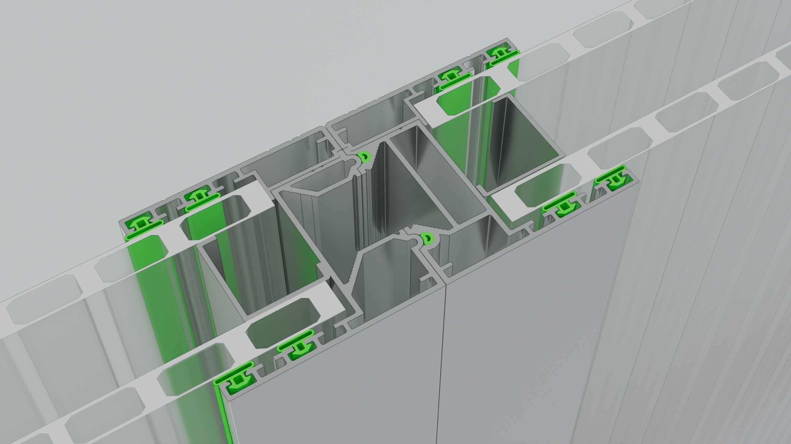
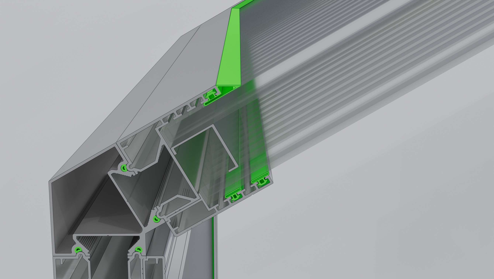

CAD MİMARİSİ & PATENTLİ BİRLEŞİMLER
Patentli EPDM Yeşil Conta Detay Galerisi
Katalogumuzda yer alan mühendislik çizimlerine göre; profillerimizin iç ve dış birleşimlerinde kullanılan özel yeşil contalar genleşmeyi sönümler, su ve hava sızdırmazlığını kilitler. İncelemek için görsellere tıklayın.

Duvar Birleşimi Conta Detayı
Çift taraflı polikarbon kilit kanalı ve yeşil EPDM yalıtım contası.

Kapı Birleşimi Conta Detayı
Hava sirkülasyonunu ve ısı kaçağını engelleyen manyetik kapı fitil yuvası.

Çatı Birleşimi Conta Detayı
Ağır kar yükünde esneyen ve sızdırmazlığı koruyan mahya birleşimi.

Çift Cidarlı Duvar Birleşimi
8mm dış cam + 10mm polikarbonu eş zamanlı kavrayan kompozit conta kanadı.

Çift Cidarlı Çatı Birleşimi
İç yoğuşma su kanalizasyonu tahliyeli çatı saçak ve kalkan birleşimi.

Entegre Solar Jaluzi Kesiti
Fotovoltaik hücreleri koruyan lamine kanal ve gizli kablolama omurgası.